Round 2: letterform marks
Ten marks built from the letters U, D and P (the name is user and product, so U with D and U with P are both in scope, and the ampersand may join them). They replace the four-tile Signal mark, which reads as bland and without presence.
In order of priority: authority and trust first (a serious publication a professional would cite), then character, then the qualities: mass, one idea per mark, a two-tone fold where forms overlap, an app-icon feel (seven are contained in or shaped as a circle or rounded square, three stand free for comparison), and recognisable at 32 px. No thin strokes (nothing under 8 at 512), no gradients, no cartoon. Signal blue with a lighter fold tone by default; R2-06 and R2-09 are in an alternative colour.
Each mark is shown first in the test it must pass, a 110 px circle and rounded-square avatar on white and on near-black, then at 160 px, as a rendered 32 px favicon, in the corner of a thumbnail, and in the 236 px header lockup with the current Inter Display Bold wordmark for a fair comparison.
- R2-01Shared stem
- R2-02Turned U
- R2-03Split ring
- R2-04D holds U
- R2-05Cut coin
- R2-06Two hooks
- R2-07Stack
- R2-08Lit D
- R2-09Ampersand
- R2-10Folded u
R2-01
Shared stem
Avatar test: 110 px circle and rounded square
Mark at 160 px

Favicon: rendered 32 px and 16 px PNGs, and the 32 px enlarged three times
Thumb: lockup 120 px wide in the corner of a 600 x 338 tile (black, 92 percent)
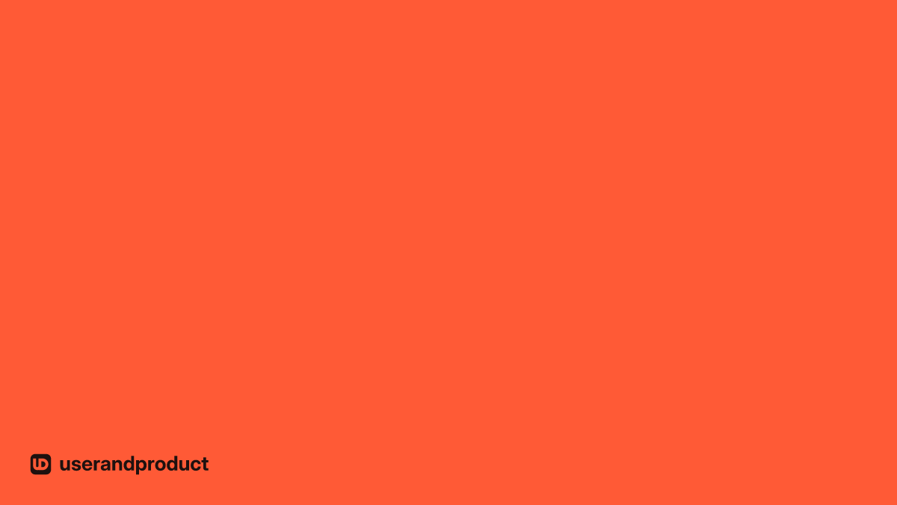
Header lockup at 236 px, with the current Inter Display Bold wordmark
- The idea
- A U and a D standing side by side on one shared stem, in a rounded square.
- Why "oh nice"
- The middle stem is both letters at once, and the light fold shows exactly where they share it.
- Authority check
- Two upright capitals, heavy and level, with no trick to decode: it reads like a publisher's monogram.
- Construction
- White U and light-blue D, stems 72 at 512, overlapping by one stem width. The shared stem is the fold tone, and the D's square foot shows below the U's curve. Signal-blue rounded square.
- Closest existing logos in this visual family
- LinkedIn (two letters set tight in a rounded tile)
- Udemy (a U letter mark)
- Dailymotion (a single letter in a tile)
R2-02
Turned U
Avatar test: 110 px circle and rounded square
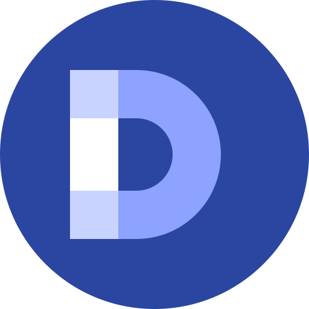
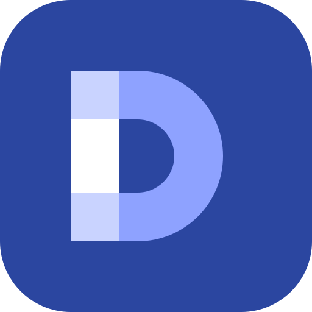
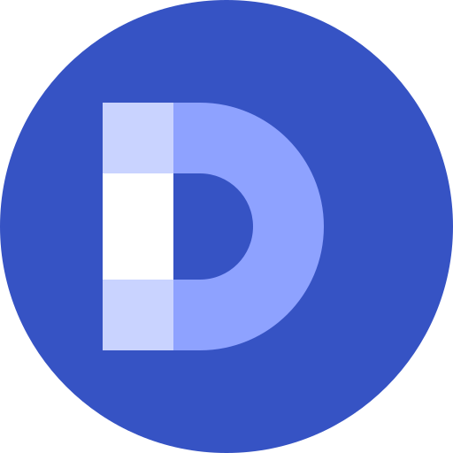
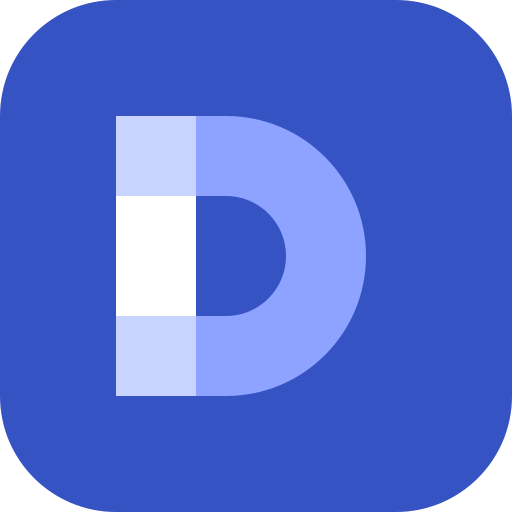
Mark at 160 px
Favicon: rendered 32 px and 16 px PNGs, and the 32 px enlarged three times
Thumb: lockup 120 px wide in the corner of a 600 x 338 tile (black, 92 percent)
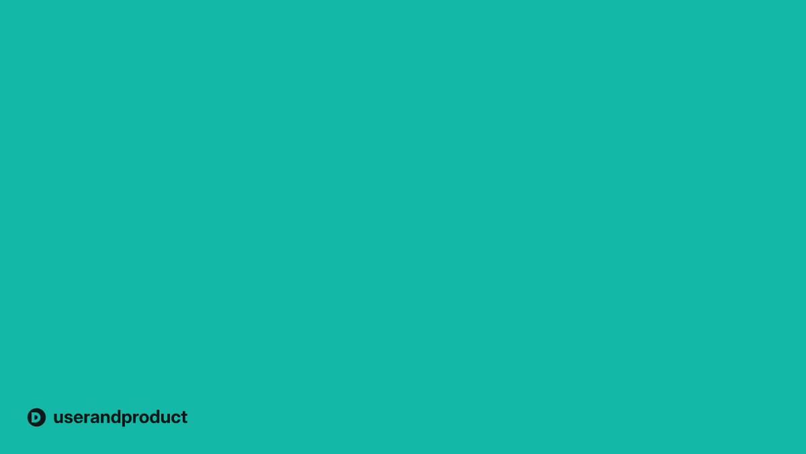
Header lockup at 236 px, with the current Inter Display Bold wordmark
- The idea
- Turn a U on its side and lay its open ends on a stem: it becomes a D.
- Why "oh nice"
- The two light squares are the U's ends folding over the stem; once you see the U, it stays.
- Authority check
- Read quickly, it is a plain heavy D in a circle, steady and symmetrical, like a seal.
- Construction
- White stem 80 wide. A light-blue U, stems 80, turned 90 degrees so its ends sit on the stem; the two overlaps are the fold squares. Signal-blue circle.
- Closest existing logos in this visual family
- DigitalOcean (a round form with small squares at its base)
- Discovery (a D monogram)
R2-03
Split ring
Avatar test: 110 px circle and rounded square
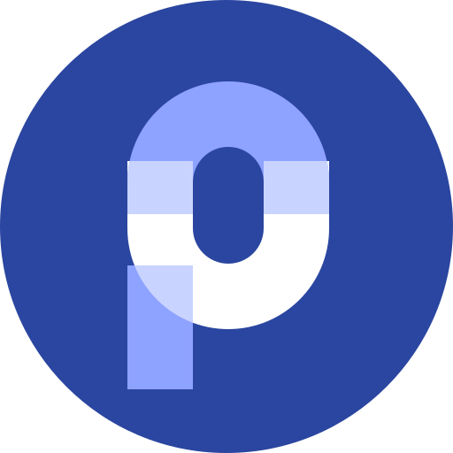
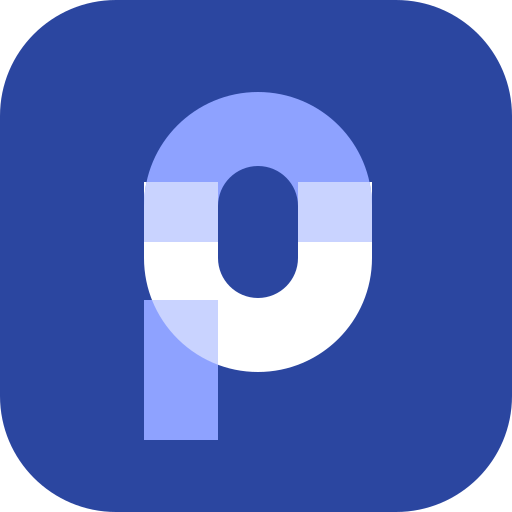
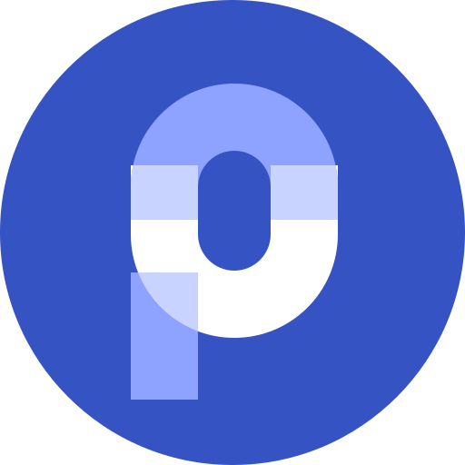
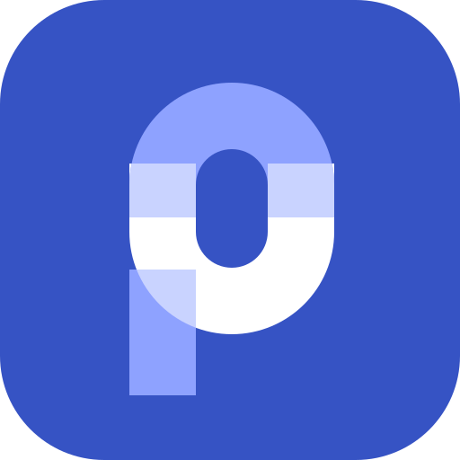
Mark at 160 px
Favicon: rendered 32 px and 16 px PNGs, and the 32 px enlarged three times
Thumb: lockup 120 px wide in the corner of a 600 x 338 tile (white, 92 percent)
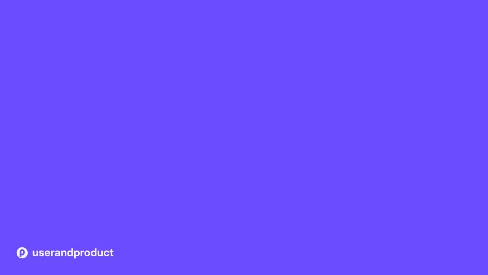
Header lockup at 236 px, with the current Inter Display Bold wordmark
- The idea
- One ring cut across the middle: the lower half is a u, the upper half and a tail make a p.
- Why "oh nice"
- The u and the p share a single counter, so the mark is the word "up".
- Authority check
- It reads first as a sturdy lowercase p in a disc, a shape people already trust on a home screen.
- Construction
- White U, stems 74, overlaps a light-blue arch of the same width by 60; the two side bands where they overlap are the fold. The p's tail, also light blue, folds over the u's left side. Signal-blue circle.
- Closest existing logos in this visual family
- Pinterest (a p in a circle)
- Product Hunt (a P in a circle)
R2-04
D holds U
Avatar test: 110 px circle and rounded square
Mark at 160 px
Favicon: rendered 32 px and 16 px PNGs, and the 32 px enlarged three times
Thumb: lockup 120 px wide in the corner of a 600 x 338 tile (black, 92 percent)
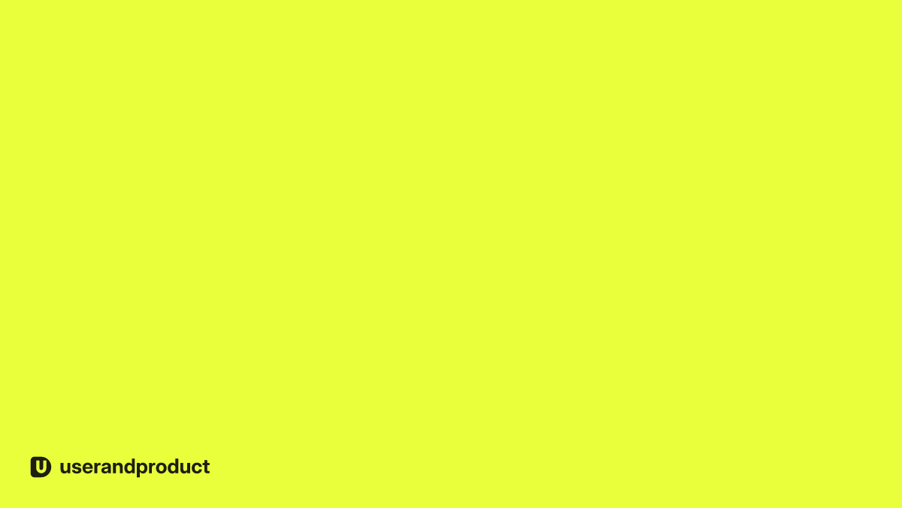
Header lockup at 236 px, with the current Inter Display Bold wordmark
- The idea
- A solid D with a U cut out of it, so the letter is the icon's own shape.
- Why "oh nice"
- The user sits inside the product: the U is made of nothing but the space the D leaves.
- Authority check
- One closed, solid silhouette with a clean cut-out, the kind of mark that holds up on a book spine.
- Construction
- Solid D: stem half in signal blue, bowl half in bright blue, meeting on the bowl's centre line. U cut out with stems 62. No overlap here: the two tones meet at a seam, and the cut-out crosses it.
- Closest existing logos in this visual family
- Dashlane (a solid D shape with a cut)
- Deutsche Bahn (letters inside a rounded frame)
R2-05
Cut coin
Avatar test: 110 px circle and rounded square
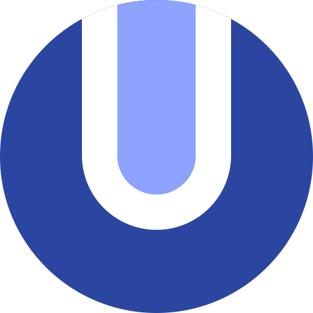
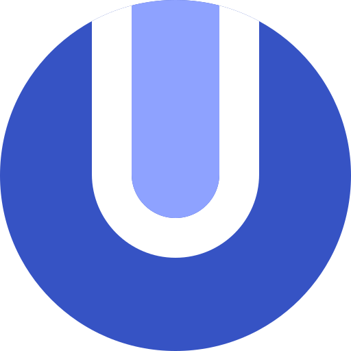
Mark at 160 px
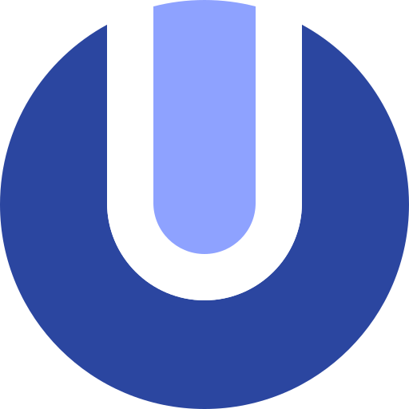
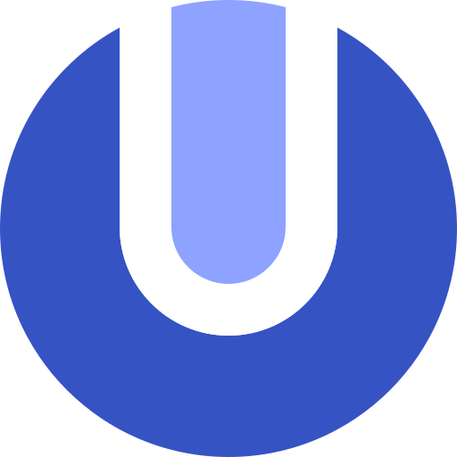
Favicon: rendered 32 px and 16 px PNGs, and the 32 px enlarged three times
Thumb: lockup 120 px wide in the corner of a 600 x 338 tile (white, 92 percent)
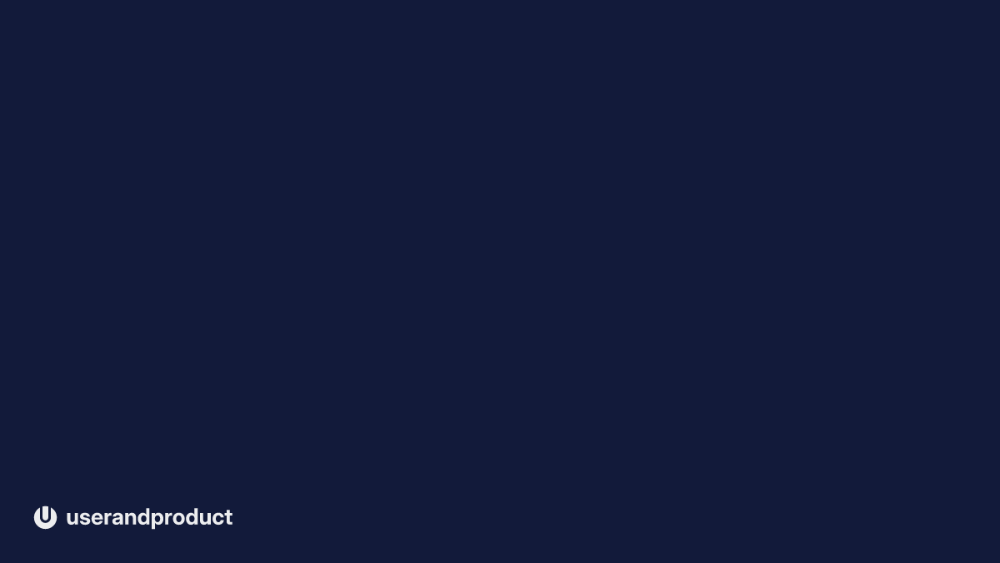
Header lockup at 236 px, with the current Inter Display Bold wordmark
- The idea
- A U cut out of a filled circle; the middle of the circle is the U's counter.
- Why "oh nice"
- The container and the letter are one object: take the circle away and there is no U.
- Authority check
- A coin with a single clean cut: sober, permanent, nothing added.
- Construction
- Signal-blue circle. A white U-shaped groove, 58 wide, runs out through the top edge; the counter inside the groove is a light-blue tongue. Three regions of one disc, no outline.
- Closest existing logos in this visual family
- Uber (the 2016 app icon, one shape with one cut)
- Ubuntu (a circle broken by cuts)
R2-06
Two hooks
Avatar test: 110 px circle and rounded square
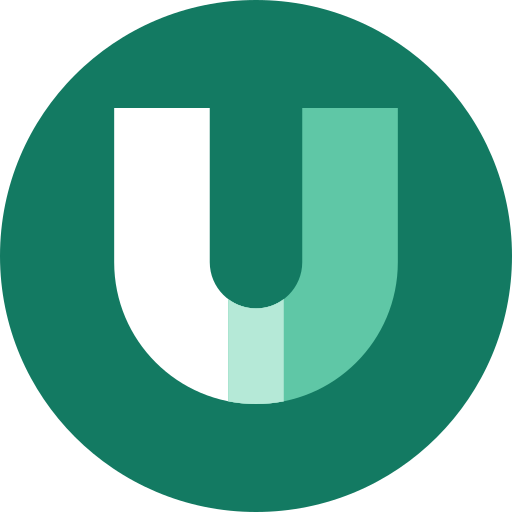
Mark at 160 px
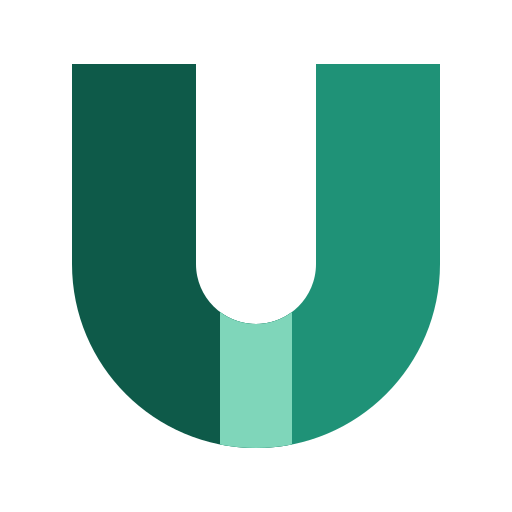
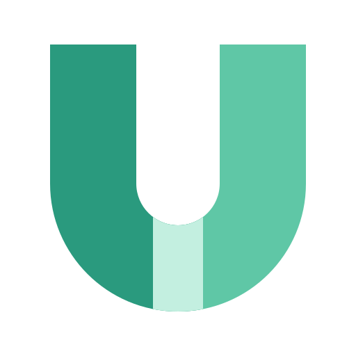
Favicon: rendered 32 px and 16 px PNGs, and the 32 px enlarged three times
Thumb: lockup 120 px wide in the corner of a 600 x 338 tile (black, 92 percent)
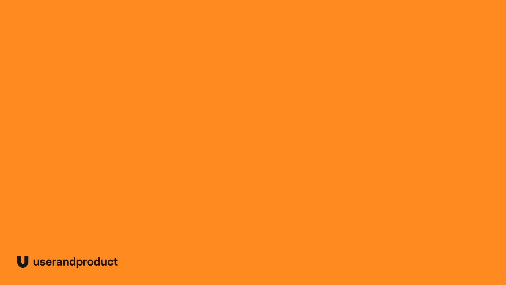
Header lockup at 236 px, with the current Inter Display Bold wordmark
- The idea
- A heavy U made of two hooks, one from each side, folded where they meet at the base.
- Why "oh nice"
- Two halves meeting in the middle, user and product, holding one shape together.
- Authority check
- Massive, symmetrical and upright: the weight of a university letter without the ornament.
- Construction
- Built from two tones only. Left hook deep green, right hook mid green, overlapping by 72 at the base; the overlap is the light fold. Stems 124 at 512. Alternative colour: deep green.
- Closest existing logos in this visual family
- Udemy (a U letter mark)
- Upwork (a heavy rounded "up" letter mark)
R2-07
Stack
Avatar test: 110 px circle and rounded square
Mark at 160 px
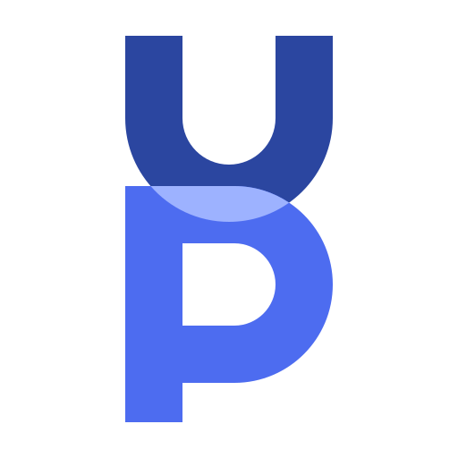
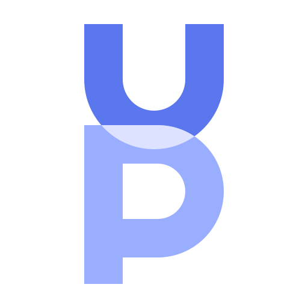
Favicon: rendered 32 px and 16 px PNGs, and the 32 px enlarged three times
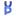
32 px x3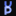
32 px x3Thumb: lockup 120 px wide in the corner of a 600 x 338 tile (black, 92 percent)
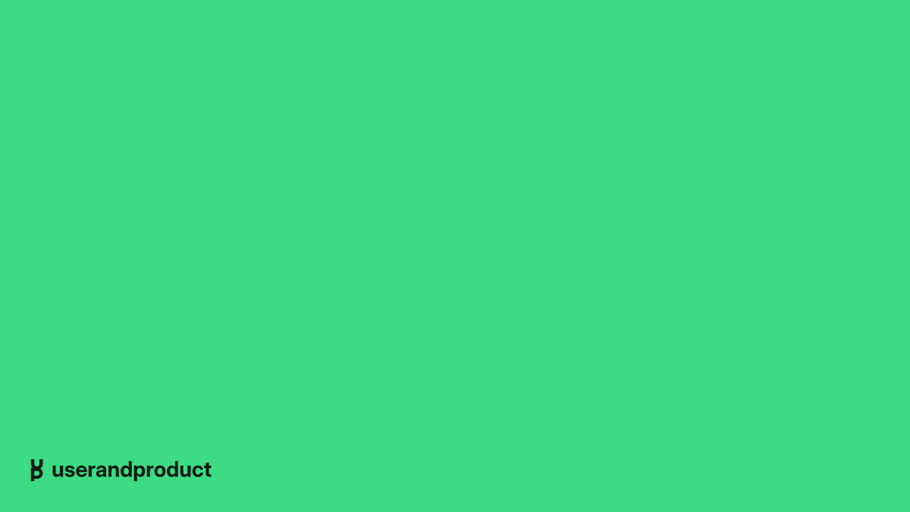
Header lockup at 236 px, with the current Inter Display Bold wordmark
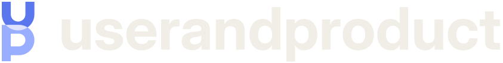
- The idea
- A U standing on a P, the P's bowl tucked into the U's curve: one upright figure.
- Why "oh nice"
- Top to bottom it reads "UP", and it stands like a person: head and shoulders over a body.
- Authority check
- An upright column of two capitals, like a masthead stacked into a narrow space.
- Construction
- U in signal blue, stems 64, overlaps the top of the P's bowl (bright blue) by 40; the lens where they meet is the light fold. Stands free; tall rather than wide.
- Closest existing logos in this visual family
- Upwork (an "up" letter mark)
- Uniqlo (stacked letters in a square)
R2-08
Lit D
Avatar test: 110 px circle and rounded square
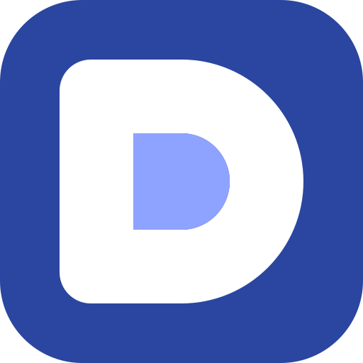
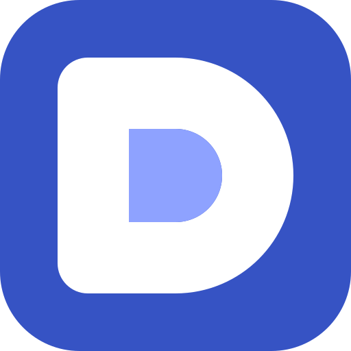
Mark at 160 px
Favicon: rendered 32 px and 16 px PNGs, and the 32 px enlarged three times
Thumb: lockup 120 px wide in the corner of a 600 x 338 tile (white, 92 percent)
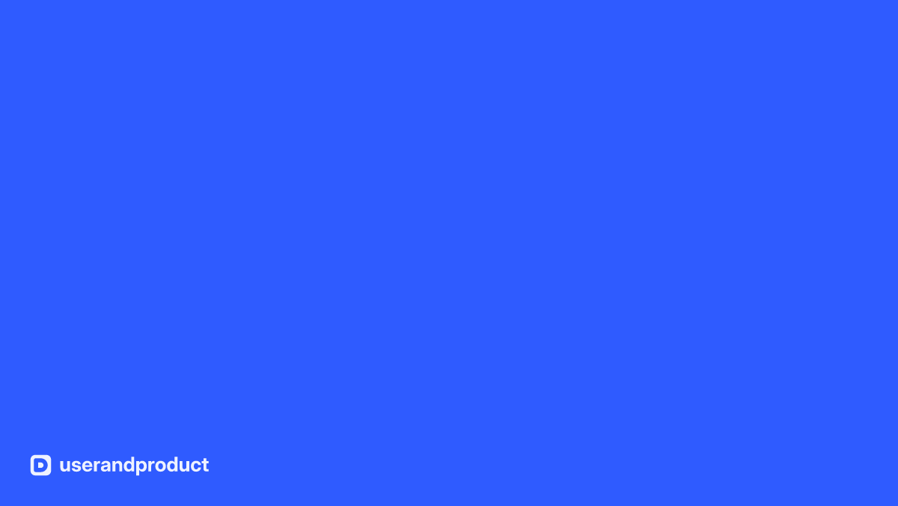
Header lockup at 236 px, with the current Inter Display Bold wordmark
- The idea
- A white D reversed out of a rounded square, drawn on the tile's own lines, its counter lit.
- Why "oh nice"
- The D's corners echo the tile's corners, so letter and icon look cut from one piece.
- Authority check
- The calmest of the ten: a heavy capital in a tile, the way serious apps and publishers sign an icon.
- Construction
- White D, stem 104, inset 84 from a signal-blue rounded square; its left corners follow the tile's radius. The counter is light blue. No overlap.
- Closest existing logos in this visual family
- Dailymotion (a letter in a square tile)
- Deutsche Bahn (letters inside a rounded frame)
R2-09
Ampersand
Avatar test: 110 px circle and rounded square
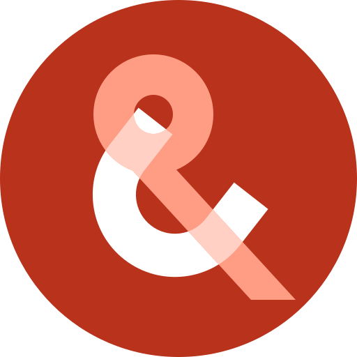
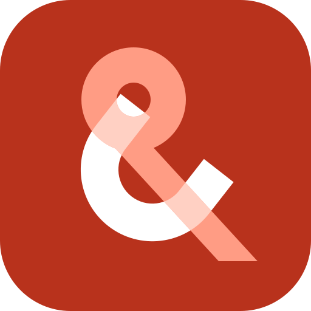
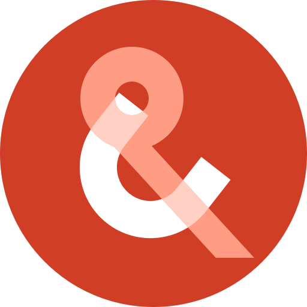
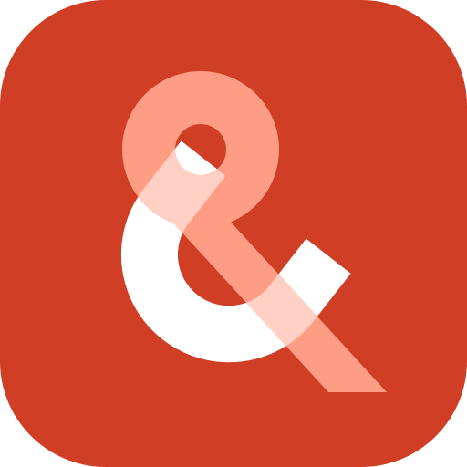
Mark at 160 px
Favicon: rendered 32 px and 16 px PNGs, and the 32 px enlarged three times
Thumb: lockup 120 px wide in the corner of a 600 x 338 tile (black, 92 percent)
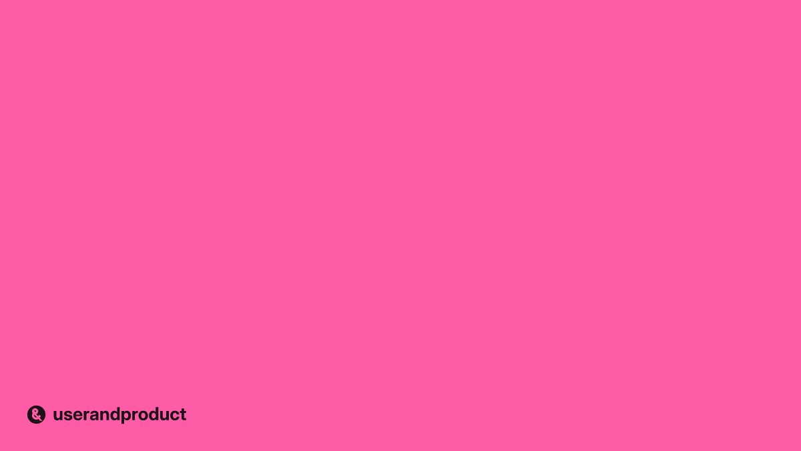
Header lockup at 236 px, with the current Inter Display Bold wordmark
- The idea
- An ampersand drawn from a P loop on top and a U bowl below, the P's stem running on as the tail.
- Why "oh nice"
- The "and" in the name becomes the mark, and it still carries the U and the P.
- Authority check
- The ampersand is a printer's sign; set in a disc it reads like a publisher's imprint.
- Construction
- Light P loop and leg; white U bowl tilted 38 degrees; the two cross twice, and both crossings are the fold. Alternative colour: vermilion circle.
- Closest existing logos in this visual family
- &pizza (an ampersand as the whole mark)
- Faber & Faber (a printer's ff monogram)
R2-10
Folded u
Avatar test: 110 px circle and rounded square
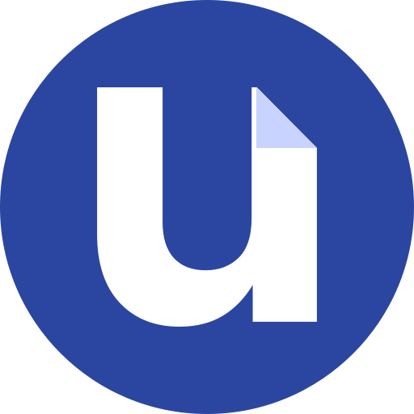
Mark at 160 px
Favicon: rendered 32 px and 16 px PNGs, and the 32 px enlarged three times
Thumb: lockup 120 px wide in the corner of a 600 x 338 tile (black, 92 percent)
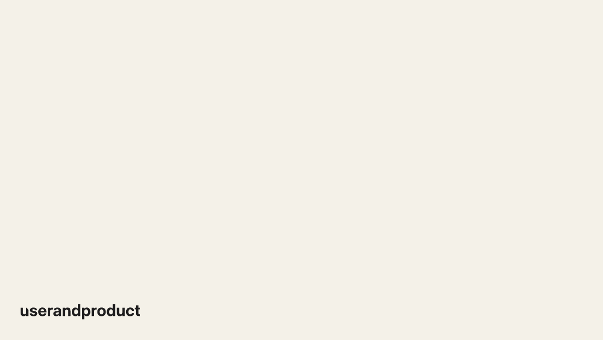
Header lockup at 236 px, the name with the custom u, no separate mark
- The idea
- Keep the name as the logo and change one letter: the first u gets a page corner folded down.
- Why "oh nice"
- A dog-eared page is what a reader does to an article worth coming back to.
- Authority check
- The name stays in plain Inter Display Bold; one corner of one letter moves, so it reads as a publication, not a gimmick.
- Construction
- Type change proposed: replace the first u of the wordmark with Inter Display Bold's u whose right stem is cut on a 45-degree line at the top; the cut corner folds in as a light-blue triangle. The u is signal blue, the other letters stay in ink. The same u, scaled up, is the icon.
- Closest existing logos in this visual family
- Evernote (the folded corner on the elephant's ear)
- Google Docs (the dog-eared page icon)
Built by build.py in this folder. Masters in svg/ (512 canvas, paths only),
rendered favicons and thumbs in png/. Rebuild notes in README.md.